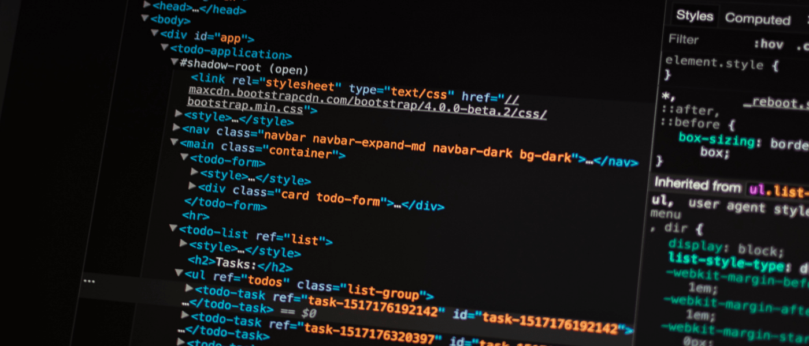

Hello folks, I am Harikrushn Kanani, it's possible that you already know me if you are following me on Instagram, Facebook, or Twitter,
But for those who are new here, I am a Full Stack Developer based in Kolkata, India.
This blog post is not about myself, it's about my website harikrushn.tech.
In this age of dynamic contents and dynamic websites, why did I build this website as a static one?
Don't worry, in the next few minutes I will answer all of these questions
And I will also convince you why you should also use a static website for your next project instead of a CMS or any dynamic site.
How a Dynamic website works?
Any dynamic website has its two parts, one is frontend which is made by the three main languages of the web HTML, CSS and JavaScript.
And the second is backend which uses server side technologies such as PHP, Python or Node.js (which is a server side framework for JavaScript)
So whenever a user visit the website and request for any information, the dynamic website passes that request to the server via server side technologies,
and the server reply back with the appropriate data from the database and sent it to the frontend of the website and then the user see those information through their browser window.
How a Static website works?
On the other hand a static website is just the frontend of the website, there is no backend or server side technologies or any database in the website.
A static website is only consists of simple HTML, CSS and JavaScript files which are directly served when called by the users. It’s as simple as that.
When you should use a Static website over a Dynamic one?
So now you know how a dynamic and a static website works but how do you decide when to use one over another?
Actually it’s also quite simple.
If you are using a CMS like WordPress for your personal website or any type of website where most of the contents are not going to change much then it’s possible that your website is an overkill and probably it’s killing your traffic.
So in these type of situation where most of the contents on your website are static then you should obviously use a static site or a static site generator.
And also when you are using a static site you don’t have to worry about malicious code being injected into your site. Because static sites are built on a production machine by a static site generator.
So there are no server, means standard hacking attacks like SQL injection or any other database security exploits just don’t work. And as there is no server static site is a lot faster than a dynamic site.
Also you can host a static site with any hosting provider on a very lower cost which is not possible for a Dynamic website.
Tools for building a static site
If you are a developer there are lots of popular static site generator available to build a static website where you can also set up a static blog.
Some of the popular static site generators are Jekyll (Ruby), Hugo (go), Hexo (JavaScript), Pelican (Python) You can use any one of them which one you feel comfortable with.
I personally do not use any one of them, I choose to use Frozen-flask which is an extension of flask micro framework. So I build my website and blog with this which you are reading right now.
So at last I just want to tell you that if you want to build a simple straight forward website and a blog or you are a kind of a developer who is always ready to makes his hands dirty with some code every time when you publish a new blog post then I think a static website is a perfect one for you.
And off course you can upgrade your static website to a dynamic one as you grow big. But till then I think this one is best for your business.
If you find this article helpful or you like it, then show me your love, share it on facebook or twitter and tag me on your post @Harikrushn on Instagram and @Harikrushn9 on twitter
Written by Harikrushn